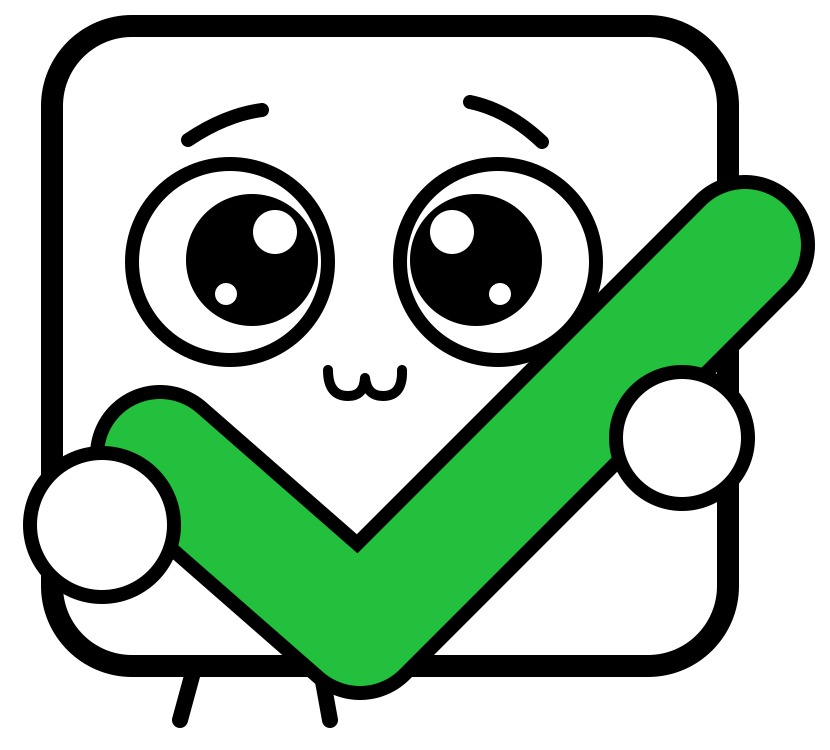

Phantom
- Tap Copy link above.
- Open the Phantom app and tap the Browser or Explore icon at the bottom.
- Tap the address bar, press and hold, choose Paste, then tap Go.
- On NOTBOT, tap Phantom and approve the connection.

notbotEvery token you ever traded left a small account on Solana with about 0.002 SOL locked inside. NOTBOT finds the empty ones, closes them, and sends the SOL back to your wallet.
No wallet detected in this browser. Wallets only connect from their own built-in browser. Open this page inside your wallet app:
Using Backpack? Copy the link and paste it into Backpack's browser. See how.
Connected:
| Empty accounts found | 0 |
|---|---|
| Closing in this round | 0 |
| SOL released | 0 |
| NOTBOT fee (1%) | 0 |
| You receive (99%) | 0 |
Wallets connect to websites only from their own built-in browser. If you open the link in Chrome or Safari, the wallet buttons will not work. The fix is simple: copy the link, then paste it into your wallet's browser.
notbot-app.vercel.app
Backpack has no one-tap button here, so use copy and paste.
On a computer, install the wallet's browser extension, open NOTBOT in the same browser, and press your wallet's button. Menu names can differ slightly between app versions.
Connect Phantom, Solflare or Backpack. You can also paste any address to see what is locked there, but only the owner can close accounts.
NOTBOT reads your token accounts through Helius and keeps only those with a zero balance. Accounts that hold tokens are never touched.
You see the total, the fee and what you receive. Your wallet then asks you to approve the transaction. Nothing happens without your signature.
Trading bots such as Trojan, BONKbot, Maestro and Banana Gun create a Solana wallet for you and open a new token account for every coin you trade. Most of those accounts end up empty. To reclaim their SOL, you load the bot's wallet into a wallet app you control, then run NOTBOT from inside that app.
Open your chat with the bot, go to its wallet or settings menu, and look for Export Private Key. The bot shows a warning first, then the key. Menu names differ slightly between bots and versions.
The idea is the same: find the wallet menu, choose export or show private key, and copy the Solana key. If a bot only offers a seed phrase, your wallet app can import that instead.
Press and hold the message that contains the key, then choose Copy. It is a long string of letters and numbers with no spaces. Do not take a screenshot and do not forward the message.
Import it as a new account. Your wallet keeps the key on your device.
Check that the address shown in the wallet matches the address your bot shows. If it does, you imported the right wallet.
Delete the key message in Telegram and clear your clipboard by copying any short word. Then follow Open NOTBOT inside your wallet, switch to the imported account, connect, scan and press Reclaim SOL.
That key has now passed through Telegram and your clipboard, so treat the bot wallet as exposed. Move anything you want to keep to a fresh wallet that you created yourself, and use the bot wallet only for small trading amounts.
Each token account keeps a rent deposit of about 0.00203928 SOL. Closing the account releases it. This is what happens to one account:
| Where it goes | Share | SOL per account |
|---|---|---|
| Released by the network | 100% | 0.00203928 |
| NOTBOT service fee | 1% | 0.00002039 |
| Sent to your wallet | 99% | 0.00201889 |
The fee is a separate transfer inside the same transaction you sign, so you can read it in your wallet's preview. You also pay the normal Solana network fee, a fraction of a cent. Up to 24 accounts are closed per round; run NOTBOT again for the rest.
NOTBOT is a static page. It builds a transaction in your browser and your wallet signs it. We never ask for a seed phrase or a private key, and we have no server that could receive one.
A genuine NOTBOT transaction only contains account-close instructions and one SOL transfer of 1% of the released rent to the fee wallet listed below. If you see anything else, reject it.
Copies of websites are common. Only use the exact link you got from the official NOTBOT channels, and check that the fee wallet in your wallet's preview matches the one in the footer.
No. Only accounts with a balance of exactly zero are closed. Accounts holding tokens, or that are frozen, are skipped.
Yes. The transaction touches only empty token accounts and the fee transfer. Your other tokens and SOL are not part of it, and your wallet shows every instruction before you approve.
Solana requires a rent-exempt deposit to keep account data on chain. When you sell a token completely, the account stays open and the deposit stays locked until someone closes it.
NOTBOT closes up to 24 accounts per round, grouped into transactions of 8 accounts each. When a round finishes, press Reclaim again for the next one.
Yes, a tiny amount to pay the network fee, around 0.00001 SOL per transaction.
Not yet. The code is short and readable, and your wallet shows exactly what you are signing. Start with a wallet that holds little value if you want to try it first.
Closing removes the empty account. If you buy that token again, a new account is created automatically.